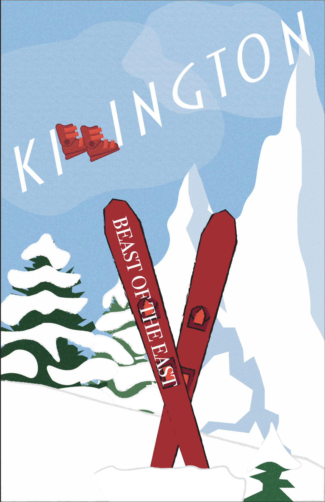
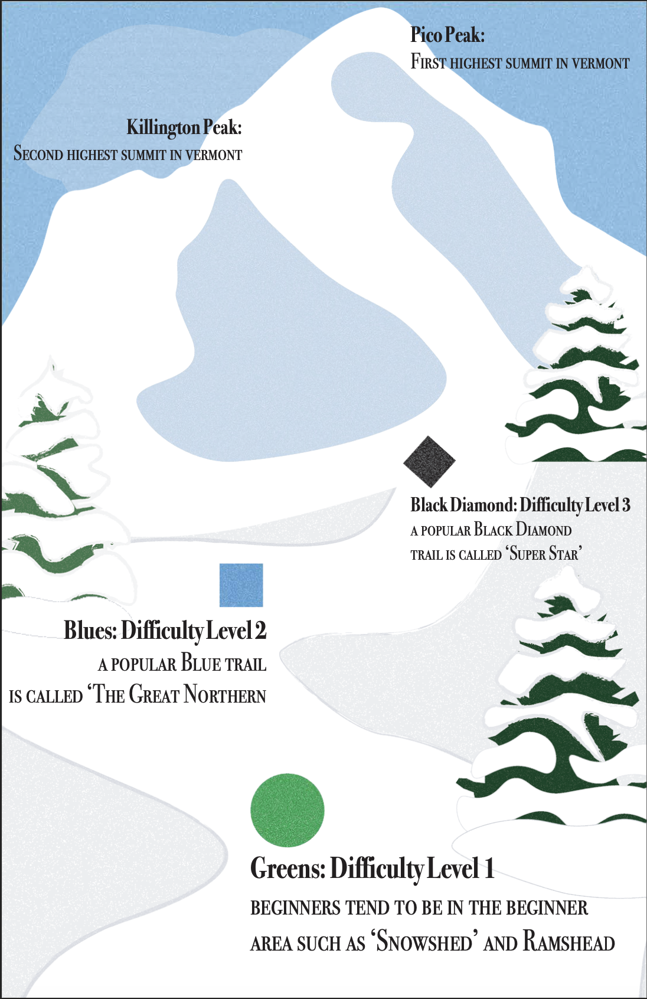

Killington Infographic
How might we turn dense resort data into something a first-time skier can understand at a glance?
Overview
This visual-communication project asked me to take a large set of statistics and turn them into a clear, engaging infographic. I focused on hierarchy, iconography, and color to guide the eye through elevation, trails, and terrain without overwhelming the reader.
Structuring the information
I grouped the data into a clear visual narrative — starting with the mountain at a glance, then breaking down trails by difficulty and elevation. Custom icons and a restrained type scale let each section breathe while keeping the whole poster cohesive.

Color and hierarchy
A warm accent palette signals difficulty and draws attention to the most important numbers first. Consistent spacing and alignment make the poster readable from across the room and up close.